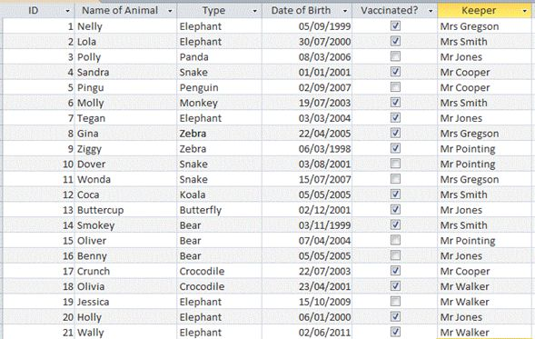

<div id="jsn-maincontent" class="span9 order1 row-fluid">
  <div id="jsn-maincontent_inner">
    <div id="jsn-centercol">
      <div id="jsn-centercol_inner">
        <div id="jsn-mainbody-content" class="jsn-hasmainbody">
          <div id="jsn-mainbody-content-inner1">
            <div id="jsn-mainbody-content-inner2">
              <div id="jsn-mainbody-content-inner3">
                <div id="jsn-mainbody-content-inner4" class="row-fluid">
                  <div id="jsn-mainbody-content-inner" class="span12 order1">
                    <div id="jsn-mainbody">
                      <div id="system-message-container"></div>

                      <div
                        class="item-page"
                        itemscope
                        itemtype="https://schema.org/Article"
                      >
                        <meta itemprop="inLanguage" content="en-GB" />

                        <div itemprop="articleBody">
                          <p>&nbsp;</p>
                          <h1 style="text-align: center">
                            <span style="line-height: 1.3em"
                              >What is a database?</span
                            >
                          </h1>
                          <p>
                            <strong
                              >Introduction</strong
                            ><br />According to the British Computer Society's
                            glossary, a database "is a (large) collection of
                            data items and links between them. structured in a
                            way that allows it to be accessed by a number of
                            different applications programs".
                          </p>
                          <p>
                            At a very simple level, a database can be a
                            collection of names and their associated phone
                            numbers, like you might have on your mobile phone,
                            or it could be the details of members in a local
                            club kept in a book. It could be a larger set of
                            details, like you might find in the Yellow Pages. It
                            could be a collection of records about patients that
                            are kept in a doctor's surgery, or a set of tax
                            records for all of the companies in the UK, or the
                            records about criminals and crimes that the police
                            keep, or details about the stock kept in a
                            supermarket and so on. In fact, when you start
                            looking, databases are absolutely everywhere and
                            used by many different kinds of people regularly.
                          </p>
                          <p>
                            Databases originally were all paper-based. Each
                            piece of information about each person, or a club
                            member, or a company, or a product, for
                            example,&nbsp;was known as an 'attribute'. All of
                            the attributes together (all of the details about a
                            person, a company etc) were known as a 'record' and
                            were collected together and typically written on one
                            card. The record cards were then collected together
                            to form a 'file'. This file was then put into a
                            filing cabinet. Users would then go into it to find
                            information in the records. A 'database' was simply
                            one or more files, so for example, you might have a
                            file for animals' details, another for vets'
                            details, another for all of the zoos in the country
                            and so on. All the files together (although there
                            might only be just one) were known as a database.
                          </p>
                          <p>
                            
                          </p>
                          <p>&nbsp;</p>
                          <p>&nbsp;</p>
                          <p>&nbsp;</p>
                          <p>&nbsp;</p>
                          <p>&nbsp;</p>
                          <p>&nbsp;</p>
                          <p>&nbsp;</p>
                          <p>&nbsp;</p>
                          <p>&nbsp;</p>
                          <p>&nbsp;</p>
                          <p>&nbsp;</p>
                          <p>&nbsp;</p>
                          <p>&nbsp;</p>
                          <p>&nbsp;</p>
                          <p>&nbsp;</p>
                        </div>
                      </div>
                    </div>
                  </div>
                </div>
              </div>
            </div>
          </div>
        </div>
      </div>
    </div>
  </div>
</div>
